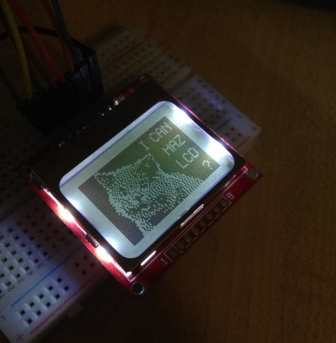

Nokia 5110 LCD — это монохромный дисплей 84x48 пикселей, который использовался в старых телефонах Nokia. Основное преимущество этого дисплея — легкость в управлении.
На плате модуля дисплея расположены два параллельных ряда по 8 пинов для подключения и передачи данных:
sudo apt install python-imaging
sudo pip install RPi.GPIO
dtparam=spi=on
sudo reboot
lsmod | grep "spi_bcm*"
git clone https://github.com/adafruit/Adafruit_Nokia_LCD
cd Adafruit_Nokia_LCD
sudo python setup.py install
#!/usr/bin/python
import time
from datetime import datetime
import Adafruit_Nokia_LCD as LCD
import Adafruit_GPIO.SPI as SPI
from PIL import Image
from PIL import ImageDraw
from PIL import ImageFont
# Raspberry Pi hardware SPI config:
DC = 23
RST = 24
SPI_PORT = 0
SPI_DEVICE = 0
# Hardware SPI usage:
disp = LCD.PCD8544(DC, RST, spi=SPI.SpiDev(SPI_PORT, SPI_DEVICE, max_speed_hz=4000000))
# Software SPI usage (defaults to bit-bang SPI interface):
#disp = LCD.PCD8544(DC, RST, SCLK, DIN, CS)
# Initialize library.
disp.begin(contrast=40)
# Clear display.
disp.clear()
disp.display()
# Create blank image for drawing.
# Make sure to create image with mode '1' for 1-bit color.
image = Image.new('1', (LCD.LCDWIDTH, LCD.LCDHEIGHT))
# Get drawing object to draw on image.
draw = ImageDraw.Draw(image)
print('Press Ctrl-C to quit.')
while True:
# Get current time
strt = datetime.now().strftime('%H:%M:%S')
# Draw a white filled box to clear the image.
draw.rectangle((0,0,LCD.LCDWIDTH,LCD.LCDHEIGHT), outline=255, fill=255)
# Alternatively load a TTF font.
# Some nice fonts to try: http://www.dafont.com/bitmap.php
font = ImageFont.truetype('game_over.ttf', 58)
# Write some text.
draw.text((0,0), strt, font=font)
# Display image.
disp.image(image)
disp.display()
time.sleep(1.0)
sudo python clock.py